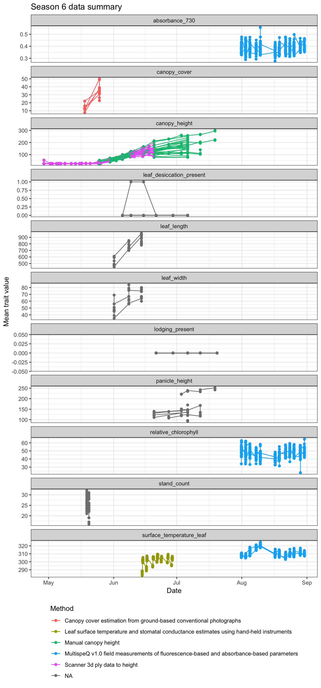
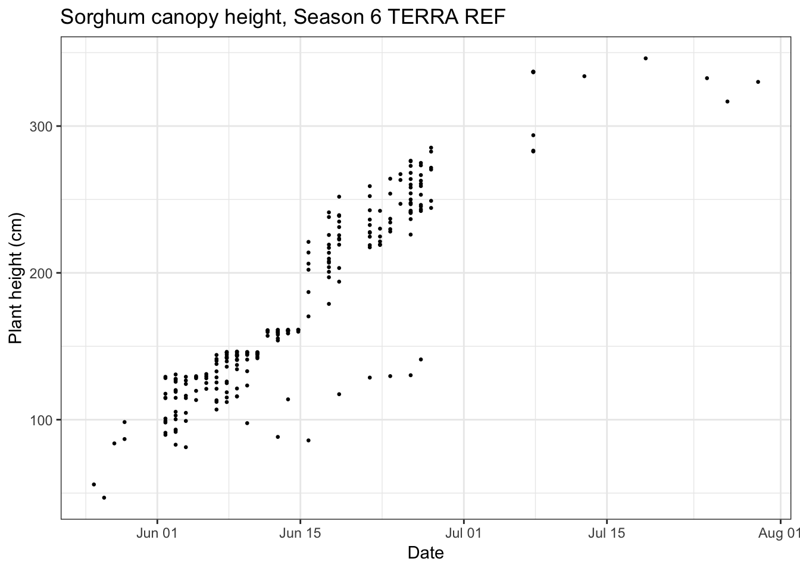

Chapter 3 Accessing trait data in R
3.1 Learning Objectives
In this chapter you will learn:
- How to create a summary of available data to query from a TERRA REF season
- How to query a specific trait
- How to visualize query results
3.2 Introduction
In this chapter, we go over how to query TERRA REF trait data using the traits package. The traits package is a way to query for various sources of species trait data, including BETYdb, NCBI, Coral Traits Disease and others. In this chapter we use BETYdb as our trait source, as it contains the TERRA REF data that we are interested in.
Our example will show how to query for season 6 data and visualize canopy height. In addition to the traits package we will also be using some of the tidyverse packages, which allow us to maniupulate the data in an efficient, understandable way. If you are unfamiliar with tidyverse syntax, we recommend checking out some of the resources here.
3.3 Query for available traits
3.3.1 Getting Started
First, we will need to install and load the traits package from github, and load it into our environment, along with the other packages we will use in this tutorial.
# devtools::install_github('terraref/traits', force = TRUE) # run once
library(traits)
library(ggplot2)
library(lubridate)
library(dplyr)
library(knitr)3.3.2 Setting options
The function that is used to query BETYdb is called betydb_query. To reduce the number of arguments needed to pass into this function, we can set some global options using options. In this case, we will set the URL used in the query, and the API version.
options(betydb_url = "https://terraref.ncsa.illinois.edu/bety/",
betydb_api_version = 'v1')3.3.3 Querying available traits
The TERRA REF database contains trait data for many other seasons of observation, and available data may vary by season. Here, we get a visual summary of available traits and methods of measurement for a season.
First we construct a general query for the Season 4 data. This returns all season 4 data. The function betydb_query takes as arguments key = "value" pairs which represent columns in the database to query. In this example, we sitename column for season 4 data, and set the limit to “none” to return all records. By default, the function will search all tables in the database. To specify a particular table you can use the table argument.
# get all of season 4 data
season_4 <- betydb_query(sitename = "~Season 4",
limit = "none")The return value for the betydb_query function is just a data.frame so we can work with it like any other data.frame in R.
Let’s plot a time series of all traits returned. First you might notice that the relevant date columns in the season_4 data.frame are returned as characters instead of a date format. Before plotting, let’s get our raw_date column into a proper date format using functions from dplyr and lubridate.
season_4 <- season_4 %>%
mutate(raw_date = ymd_hms(raw_date))3.3.4 Plot season 4 summary
Now we can create a plot of all of the trait data collected during season 4, including information about the methods used.
ggplot(data = season_4) +
geom_point(aes(x = raw_date, y = mean, color = method_name)) +
geom_line(aes(x = raw_date, y = mean, group = cultivar, color = method_name)) +
facet_wrap(~trait, ncol = 1, scales = "free_y") +
xlab("Date") +
ylab("Mean trait value") +
ggtitle("Season 6 data summary") +
guides(color = guide_legend(title="Method", ncol = 1, title.position = "top")) +
theme_bw() +
theme(legend.position = "bottom")
We can view more information about these trait measurements by examining unique values in the trait and trait description columns.
traits <- season_4 %>%
distinct(trait, trait_description)
kable(traits)| trait | trait_description |
|---|---|
| canopy_height | top of the general canopy of the plant, discounting any exceptional branches, leaves or photosynthetic portions of the inflorescence. |
| canopy_cover | Fraction of ground covered by plant |
| leaf_desiccation_present | Visual assessment of presence or absence of leaves showing desiccation. 1 = present, 0 = absent |
| leaf_length | Length of leaf from tip to stem along the midrib. |
| leaf_width | width of leaf at widest point along leaf |
| lodging_present | Visual assessment of presence or absence of lodging or severe leaning within a plot. 1 = present, 0 = absent |
| surface_temperature_leaf | Leaf surface temperature estimates of an individual haphazardly selected sunlit leaf in the upper canopy, targeting fully expanded leaves when possible, using hand-held instruments |
| panicle_height | height to top of panicle |
| stand_count | Number of plants per subplot or plot, counted after thinning |
| absorbance_730 | Absorbance at 730 nm |
| relative_chlorophyll | Relative value describing the concentration of chlorophyll in the leaf, ranges from 0 to 80 |
3.4 Querying a specific trait
3.4.1 Querying season 6 canopy height data
You may find after constructing a general query as above that you want to only query a specific trait. Here, we query for the canopy height trait by adding the key-value pair trait = "canopy_height" to our query function. Note that the limit is also set to return only 250 records, shown here for demostration purposes.
canopy_height <- betydb_query(trait = "canopy_height",
sitename = "~Season 6",
limit = 250)3.4.2 Plotting query results
As before, we need to reformat the raw date column.
canopy_height <- canopy_height %>%
mutate(raw_date = ymd_hms(raw_date))And we can generate a time series plot of just the canopy height data.
#plot a time series of canopy height
ggplot(data = canopy_height,
aes(x = raw_date, y = mean)) +
geom_point(size = 0.5, position = position_jitter(width = 0.1)) +
xlab("Date") +
ylab("Plant height (cm)") +
ggtitle("Sorghum canopy height, Season 6 TERRA REF") +
theme_bw()